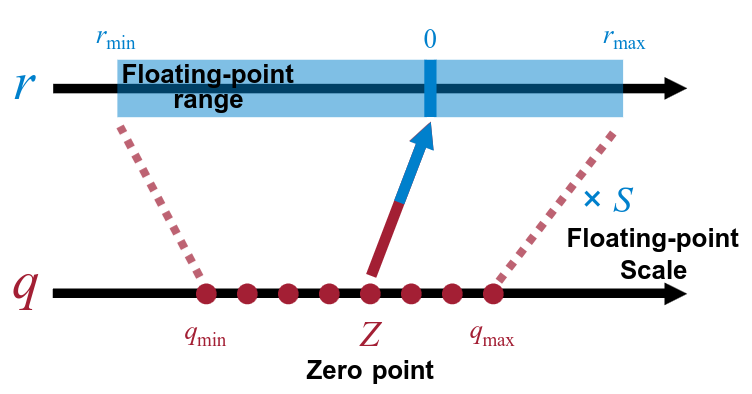
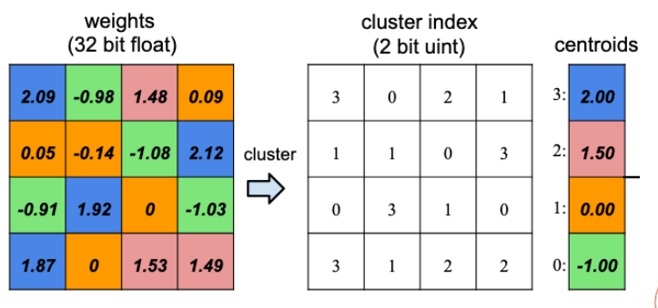
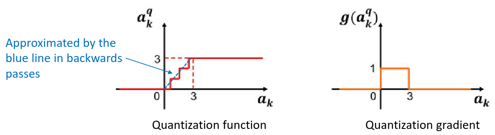

Quantization (a.k.a. magic with numbers)
In quantization, we reduce the precision used for storing numbers in order to gain in compactness of a Neural networks . For example, we may want to pass from a 32 bit floating point representation to a 8 bit (or less) fixed point representation. The standard size of quantization is 8 bit that guarantee a minimal loss in accuracy (especially with quantization-aware training) however is not uncommon to find 4 bit quantization and even 2 bit.
Quantization formula
In general, the quantization process can be seen as an affine mapping: Of course, in the process, a bit of precision get lost and the reconstruction of the original weights brings some error. The quantized weights matrix is saved with signed integer values as for the zero point value. The scale, on the other hand, it's a 32 bit floating point number. 
Where: Z is the quantized matrix, S the scale and q the zero point.
How to use quantization
Most of the quantization tool compute the values for Z, q and S (and for the bit size representation) on a per-layer scale in order to maximize the accuracy and minimize the size of the network. This process is called mixed precision while having the same precision for all layers is called fixed precision.
Non-uniform quantization
The quantization method discussed before assume a uniform distribution of the weights but, in most of the cases, this is not true. Therefore, having a representation that allow for more precision in the denser space while a less precision in the narrower one, could increase accuracy. There are two main ways to achieve this:
- Log domain quantization where we store the values in a log 2 scale (useful when all the weights are around 0)
- Learned quantization (weight clustering) where we use a clustering technique to compute the values that will be used in the neural network 
Quantization-aware training
For some of the more aggressive quantization strategies (es 4 or 2 bits quantization), can be critical to train the network while quantizing it so that we can re-obtain a bit of accuracy in the process. Qantization-aware training brings some challenges on the table like the need to compute a new gradient function for the weight since the new weigths have either 0 or gradient value. To solve such problem we can use the identity function as the new gradient function. 
Another way to deal with the training problem is to use a fake-quantized network. A fake-quantized network keeps saved both the non-quantized and the quantized weights so that can use the 32 bit floating point values during backpropagation and the quantized values during inference. After the training is finished, we can "discard" the float values.
The quantization process can be also done in the activations "on the go", during inference.